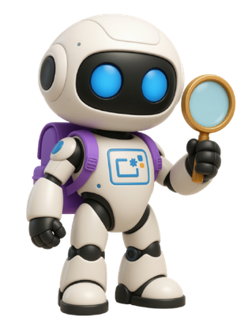
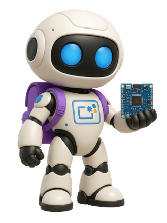
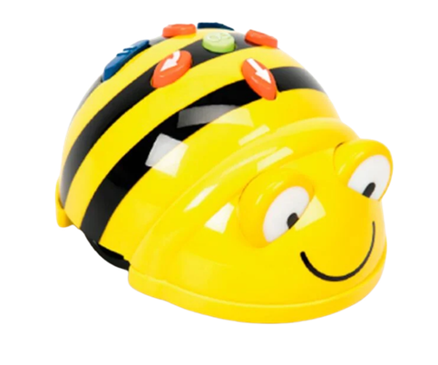
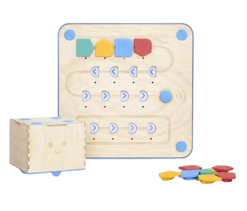
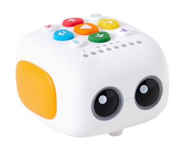
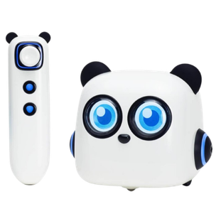
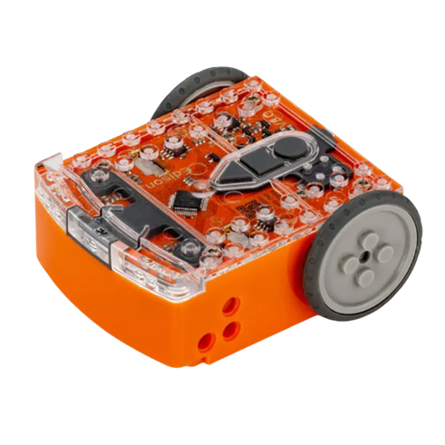
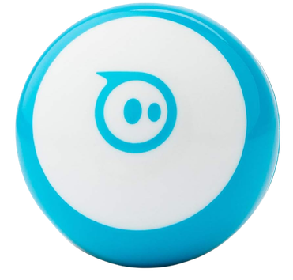
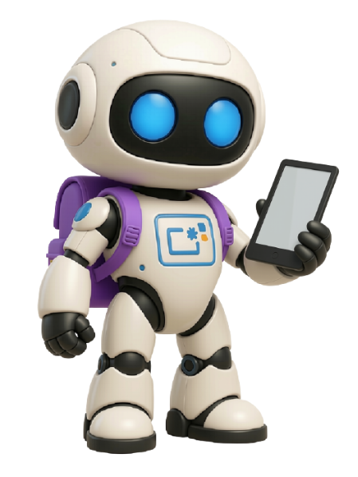
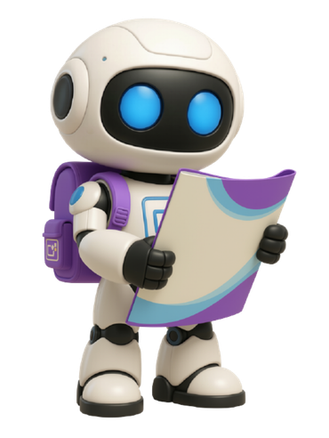

Recursos didácticos
Materiales para el aula
Próximamente incorporaremos los materiales y las propuestas didácticas elaborados desde DTD.
Recursos y propuestas prácticas para explorar, crear y enseñar con tecnología en Educación Infantil y Primaria.

Materiales de robótica educativa, programación y pensamiento computacional para usar en el centro y en el aula.
Guías, tutoriales, e-books y materiales prácticos sobre Canva, inteligencia artificial y otras herramientas educativas.
Materiales didácticos, actividades y propuestas de aula elaborados desde DTD para apoyar y enriquecer la práctica docente del centro.
Un espacio para descubrir, explorar y poner en práctica los materiales de robótica del centro de forma sencilla, útil y conectada con el aula.

Selecciona un material para consultar sus características y propuestas de aula

Programación de recorridos, orientación espacial y pensamiento computacional
Comprobar la carga del robot, seleccionar un tapete adecuado y preparar los destinos del recorrido. Organizar turnos de participación para que el alumnado pueda planificar, programar, observar y revisar las instrucciones.
Materiales complementarios: tapete y, según la actividad, tarjetas de instrucciones e imágenes de destinos.
Dos propuestas prácticas adaptadas a distintas edades
Propuesta: Programar Bee-Bot para llegar a un destino determinado, anticipando los movimientos y comprobando el recorrido.
Desarrollo:
Indicadores de logro:
Propuesta: Diseñar y comparar dos recorridos diferentes para llegar a un mismo destino, utilizando Bee-Bot y justificando las soluciones.
Desarrollo:
Indicadores de logro:
Materiales complementarios disponibles en la carpeta compartida de Educantabria
Abrir recursos de Bee-Bot ↗
Primeros pasos en pensamiento computacional, orientación espacial y secuenciación mediante el juego y la manipulación
Preparar Cubetto, el tablero de programación, los bloques de instrucciones y el tapete. Situar el material en un espacio accesible y presentar primero el funcionamiento mediante una demostración sencilla.
Organizar pequeños grupos y adaptar la cantidad de instrucciones a la experiencia del alumnado. En 3 años, comenzar con una instrucción; en 4 y 5 años, introducir progresivamente secuencias y recorridos más elaborados.
Materiales complementarios: personajes, imágenes o tarjetas de destinos relacionadas con la actividad.
Dos propuestas con diferentes niveles de dificultad para Infantil
Propuesta: Planificar un recorrido para que Cubetto llegue hasta un personaje situado en el tapete, utilizando instrucciones adaptadas a la edad.
Desarrollo:
Adaptación por edades:
Indicadores de logro:
Propuesta: Experimentar con diferentes instrucciones para desplazar Cubetto por el tapete, anticipando qué ocurrirá y comprobando el resultado de cada recorrido.
Desarrollo:
Adaptación por edades:
Indicadores de logro:
Materiales complementarios disponibles en la carpeta compartida de Educantabria
Abrir recursos de Cubetto ↗
Programación de recorridos, resolución de retos espaciales y creación de dibujos mediante secuencias de instrucciones
Comprobar la carga de los robots y preparar el espacio de trabajo. Seleccionar un tapete adecuado al recorrido, comprobar previamente su compatibilidad con los desplazamientos del robot y disponer los materiales complementarios.
Para las actividades de dibujo, preparar los rotuladores del kit y papel sobre una superficie plana. Comprobar previamente el funcionamiento del accesorio de dibujo y proteger la mesa.
Organizar al alumnado en pequeños equipos para favorecer la participación, la planificación compartida y la revisión de los resultados.
Dos propuestas con progresión desde Infantil hasta 6.º de Primaria
Propuesta: Programar Tale-Bot Pro para desplazarse desde un punto de partida hasta un destino, anticipando el recorrido y revisando las instrucciones cuando sea necesario.
Desarrollo:
Adaptación por edades:
Indicadores de logro:
Propuesta: Utilizar el accesorio de dibujo de Tale-Bot Pro para crear trazos y figuras mediante secuencias programadas de desplazamientos.
Desarrollo:
Adaptación por edades:
Indicadores de logro:
Materiales complementarios disponibles en la carpeta compartida de Educantabria
Abrir recursos de Tale-Bot Pro ↗
Iniciación a la programación sin pantallas mediante juegos, tarjetas de instrucciones, recorridos y actividades creativas
mTiny permite trabajar sin pantallas mediante un controlador de lápiz táctil y tarjetas físicas de programación.
Comprobar que los robots están cargados, encenderlos y emparejarlos con sus controladores. Preparar los mapas y las tarjetas necesarias para la actividad seleccionada.
Con las tres unidades disponibles, organizar pequeños grupos y distribuir turnos de manipulación, observación y participación.
Recomendación para el profesorado: consultar primero la guía oficial mTiny Discover. Contiene 12 actividades organizadas en niveles básico, intermedio y avanzado, con preparación, materiales e instrucciones detalladas.
La guía fue diseñada inicialmente para edades de 4 a 6 años. En nuestro centro se utilizará desde Infantil de 5 años hasta 3.º de Primaria, ajustando los retos al nivel del alumnado.
Dos actividades de la guía oficial para comenzar a trabajar con mTiny
Propuesta: Controlar los desplazamientos de mTiny utilizando el joystick y respondiendo a señales de luz verde y roja.
Desarrollo:
Adaptación por edades:
Indicadores de logro:
Guía oficial: actividad «Luz roja, luz verde», páginas 15–17 del PDF.
Propuesta: Crear dibujos mediante las funciones de programación de mTiny, relacionando las instrucciones seleccionadas con los trazos obtenidos.
Desarrollo:
Adaptación por edades:
Indicadores de logro:
Guía oficial: actividad «Dibujando con mTiny», páginas 31–33 del PDF.
Guía de actividades mTiny Discover: documento de referencia para utilizar este material siguiendo una secuencia estructurada.
Incluye 12 actividades con materiales, preparación, desarrollo, variaciones y ejemplos ilustrados.
Si es la primera vez que utilizas mTiny, comienza con las actividades de nivel básico y sigue las instrucciones de la guía.
Abrir guía y recursos de mTiny ↗Descubre los recursos de DigiCraft disponibles en el centro y sus posibilidades educativas.

Programación por bloques, experimentación con sensores y resolución de retos mediante un robot programable
Comprobar el estado de los cuatro robots Edison V2, sus pilas y los cables de programación EdComm.
Utilizar ordenadores con una salida de audio compatible para conectar los cables EdComm. Comprobar que los programas pueden transferirse correctamente al robot antes de la sesión.
Para comenzar se recomienda EdBlocks V2. Para actividades de mayor complejidad se puede utilizar EdScratch V2.
No es necesario disponer de tapetes. Preparar una superficie plana y segura, marcar los destinos con papel y utilizar objetos cotidianos como obstáculos. Evitar que los robots puedan caerse de mesas o superficies elevadas.
Organizar cuatro equipos de trabajo, asignando un robot a cada grupo y distribuyendo los turnos de programación, comprobación y revisión.
Dos propuestas progresivas para el segundo y tercer ciclo de Primaria
Propuesta: Programar Edison V2 mediante EdBlocks para completar un recorrido sencillo, anticipando los desplazamientos y revisando las instrucciones.
Desarrollo:
Adaptación por cursos:
Indicadores de logro:
Propuesta: Diseñar un programa que permita a Edison detectar obstáculos y responder modificando su movimiento.
Desarrollo:
Adaptación por cursos:
Indicadores de logro:
Materiales complementarios y documentación de Edison V2 en la carpeta compartida de Educantabria.
Abrir recursos de Edison V2 ↗Entornos de programación:

Programación de recorridos, control del movimiento y retos de precisión mediante un robot esférico programable
Comprobar que los cuatro Sphero Mini tienen batería suficiente y que los dispositivos están disponibles para su uso.
Equipamiento necesario: Sphero Mini, tablet u ordenador compatible, aplicación Sphero Edu instalada y conexión Bluetooth.
Para las actividades de puntería y precisión se pueden utilizar los bolos disponibles en la Roboteca.
Antes de la sesión, conviene comprobar que cada dispositivo puede conectarse correctamente al robot y que la aplicación funciona sin incidencias.
Organizar al alumnado en pequeños grupos para facilitar la participación, la programación compartida y la revisión de resultados.
Dos propuestas progresivas para trabajar con Sphero Mini en Primaria
Propuesta: Programar Sphero Mini para desplazarse desde un punto de salida hasta un destino, anticipando el recorrido y comprobando el resultado.
Desarrollo:
Adaptación por cursos:
Indicadores de logro:
Propuesta: Programar y ajustar el movimiento de Sphero Mini para derribar bolos, analizando qué configuración resulta más eficaz.
Desarrollo:
Adaptación por cursos:
Indicadores de logro:
Materiales complementarios disponibles en la carpeta compartida de Educantabria
Abrir recursos de Sphero Mini ↗Aplicación necesaria: Sphero Edu
Descarga la aplicación oficial para programar y controlar Sphero Mini desde una tablet u ordenador compatible.
Guías y e-books prácticos para el profesorado.
Próximamente: Canva e inteligencia artificial.

Un espacio para consultar y compartir materiales didácticos, actividades y propuestas de aula elaborados desde DTD para acompañar y apoyar al profesorado del centro.

Próximamente incorporaremos los materiales y las propuestas didácticas elaborados desde DTD.